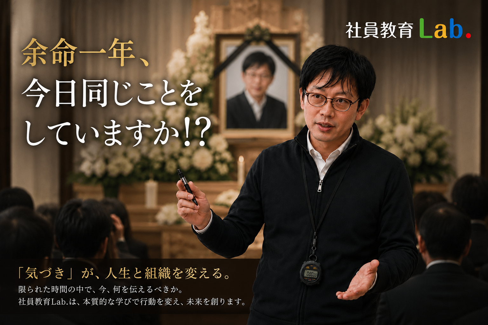
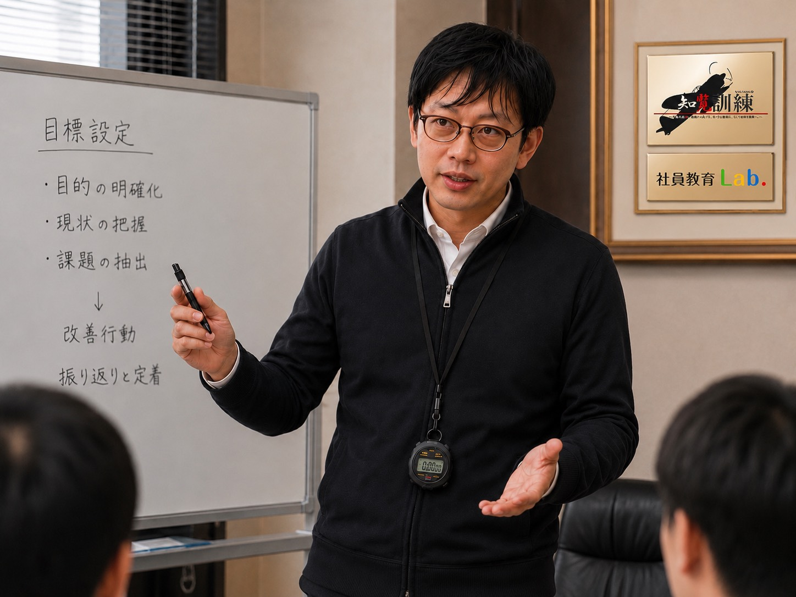

課題を見極める
売上、人財定着、管理職育成、企業文化など、経営者様の課題を整理します。
株式会社ドールハウス・エンターテインメント
社員教育Lab.は、企業ごとの経営課題に合わせた実践型の教育プログラムを設計し、社員一人ひとりの意識と行動が変わる成長の仕組みづくりを支援します。
株式会社ドールハウス・エンターテインメントは、社員教育Lab.を主軸に、広告代理店事業、芸能プロダクション事業を展開しています。
PROBLEM
会社が成長するにつれて、経営者一人の力だけでは解決できない課題が増えていきます。
制度や仕組みを整えるだけでは、人と組織が変わらないこともあります。

社員が指示を待ち、自ら考えて行動しない
若手社員が育たず、定着しない
理念や経営者の想いが現場へ伝わらない
幹部候補や次世代のリーダーが育っていない
部署や世代を越えた連携が生まれない
経営者に判断や業務が集中している
SOLUTION
社員教育Lab.は、あらかじめ決められた研修プログラムを提供するだけの教育機関ではありません。
企業の理念、経営課題、組織の状態、育成したい人財像、目指す未来を丁寧に確認し、一社ごとに必要な教育を設計します。
知識を伝えるだけで終わらせず、学んだことが現場での判断や行動につながり、組織の成果として定着するところまでを見据えます。
PEOPLE ARE THE PROTAGONISTS
人生にも、企業にも、与えられた時間には限りがあります。だからこそ、「今日同じことをしていますか？」と問い続けること。その問いが、人と企業を変える第一歩になります。
芸能プロデューサーや演出家の役割は、自らが舞台の中央に立つことではありません。一人ひとりの可能性を見つけ、必要な指導と環境を整え、本人が舞台の上で力を発揮できるように支えることです。
社員教育も同じです。講師が知識や実績を誇るのではなく、訓練生を主役にし、自ら考え、行動し、社会という舞台で力を発揮できる状態へ導きます。
今日の行動を変える。その積み重ねが、人生と組織の未来を変えていきます。社員教育Lab.は、人を輝かせるために培ってきた育成・演出・コーチングの知見を、企業の人財育成へ応用しています。

PROCESS
売上、人財定着、管理職育成、企業文化など、経営者様の課題を整理します。
企業ごとの目標に合わせて、既製品ではない教育プログラムを組み立てます。
学びを現場で活かし、社員一人ひとりが成果を生み出す状態へ導きます。
STRENGTH
教育を単なる研修で終わらせず、経営者の想いと現場の変化をつなぐ仕組みとして設計します。
経営課題と将来ビジョンから逆算し、その会社だけの教育を組み立てます。
教育会社の都合ではなく、企業ごとの課題と未来から逆算して設計します。
社員が自ら稼ぐ力を身につけるために、会社が贈る未来への投資です。
売上向上、人財定着、組織活性化を支える教育システムを形にします。
学びたい自発性と、講師の覚悟が重なる成長の瞬間をつくります。
ORIGINAL EDUCATION
誰にでも同じ情報
対象を絞った支援
一対一の支援
一社ごとの設計
一社ごとの教育設計と、ゴールへのコミット
PROGRAMS
掲載している内容は代表的なプログラムです。
企業の理念、課題、対象者、目標に応じて、内容、期間、実施方法を個別に設計します。

経営者、後継者、幹部、起業家を対象とした、マンツーマンの実践型コーチングです。
経営者思考、意思決定、リーダーシップ、目標設定、行動管理、事業承継、事業戦略を、本人の課題と目標に合わせて整理します。
参考価格38,500円（税込）〜／1回
内容・回数・期間により個別にお見積もりします。
知覧の歴史を通じて、仕事、人生、使命、仲間との関係に向き合い、覚悟と主体性を育てる体験型教育です。
参考価格330,000円（税込）〜／1名
実施内容・人数・日程により個別にお見積もりします。
孫子の兵法をビジネスの現場へ応用し、営業力、戦略思考、市場分析、顧客理解、組織づくりを実践から学ぶプログラムです。
参考価格330,000円（税込）〜／1名
実施内容・人数・日程により個別にお見積もりします。

新入社員研修、管理職研修、営業研修、理念浸透、チームビルディング、リーダー育成、接遇・コミュニケーションなど、企業課題に合わせて実施します。
参考価格330,000円（税込）〜／6時間
1グループ最大14名を目安とします。
経営者へのヒアリングをもとに、企業理念、組織課題、経営戦略、育成対象者に合わせた教育をゼロから設計します。
教材制作、研修開発、継続教育の仕組みづくりにも対応します。
参考価格1,500,000円〜5,000,000円
内容・期間・対象人数により個別にお見積もりします。

経営者の哲学、判断基準、成功体験、営業ノウハウ、企業文化、社員への想いを整理し、会社独自の教育システムとして継承します。
採用から教育、配属後の伴走までを担う、企業独自の人財育成基盤を構築します。
参考価格3,000,000円〜10,000,000円
企業規模・制作内容・期間により個別にお見積もりします。

教育を一度きりの研修で終わらせず、定期研修、管理職育成、社員面談、教育制度改善、経営者相談、組織課題分析を通じて、継続的に組織づくりを支援します。
参考価格月額300,000円〜500,000円
契約内容に応じて個別に設計します。
RESULTS
人と組織に向き合い続けてきた、実践の積み重ね。
発足以前からの活動実績を含みます。
順不同
VOICES
以下は、社員教育Lab.の教育を受けた方々の声を、個人・企業が特定されない範囲で要約したものです。
転職時の導入訓練で、これまで自分を育ててくれた人や環境への感謝を問われました。
当時は受け入れられなかった言葉が、役員となった10年後に初めて理解できました。
現在は自分が後輩を育てる立場となり、与えられた舞台で責任を果たすことの大切さを伝えています。
IT関連業 T社 取締役・第一制作局長
27歳で突然会社を継ぎ、ベテラン社員と若手社員の対立に悩んでいました。
会社の歴史、理念、課題をもとに設計された6か月間のオリジナル訓練を通じて、社員同士の関係と行動が少しずつ変化しました。
現在も、人を育て組織を変えるという考え方が、経営の軸になっています。
製造業 Y工業 代表取締役
トップセールスとして実績を上げていましたが、訓練を通じて、商品を売ることばかりを考えていた自分に気づきました。
営業とは、顧客の不安を埋めるだけでなく、相手が描く未来を明確にし、その実現を支えること。
戦略と人間力の両方が必要であることを、実践を通じて学びました。
保険業 S社 代表取締役
会社の成長に伴い、人を育てることが大きな課題になっていました。
役員、管理職、若手社員へ段階的に教育を行った結果、指示された以上のことを考え、会社全体を良くするために動く社員が育ちました。
人として信頼される社員の存在が、企業の大きな財産になっています。
建設業 S建設 代表取締役
会社を成長させるためには、まず経営者自身が学び、変わる必要があると考え、訓練へ参加しました。
その後、管理職や幹部社員への教育を進めたことで、担当部署だけでなく、会社全体の未来を考えるリーダーが育ちました。
サービス業 F社 代表取締役
社員へ厳しい言葉を伝えながら、自分自身がその言葉を実践できていないことに気づきました。
訓練の中で指揮官を任され、仲間と最後まで課題をやり切った経験から、成果を阻むものは能力ではなく、自分自身の甘さであると学びました。
飲食業 D社 代表取締役
プライバシー保護のため、企業名・個人名は匿名表記としています。
OTHER BUSINESS
株式会社ドールハウス・エンターテインメントは、社員教育事業に加えて、広告代理店事業と芸能プロダクション事業を展開しています。


SP広告、求人広告、媒体提案、イベントの企画・制作・運営など、企業の課題や目的に合わせたプロモーションを支援します。
伝える内容を整理し、必要な人へ正しく届けるための企画を設計します。


劇団 天-TEN-の運営、TSUKASAのプロモーション、舞台企画・制作、提携著名人のファンクラブ運営管理業務を行っています。
芸能や舞台の現場で培った、人の魅力を見つけ、育て、伝える力を、社員教育や企業ブランディングにも活かしています。
SUBSIDY CONSULTATION
社員教育、リスキリング、AI導入、新規事業、業務改善など、企業が活用できる助成金・補助金は多岐にわたります。
約270種類の制度から、企業の計画やプロジェクトに適したものを、専門の士業チームと連携してご提案します。
制度の利用可否や申請条件は、企業の状況や募集時期によって異なります。まずは現在の計画や課題をお聞かせください。
採択や受給を保証するものではありません。制度の最新情報と適用条件を確認したうえでご案内します。

CONTACT
組織の課題は、会社ごとに異なります。
社員教育Lab.は、決まったサービスを一方的に提案するのではなく、まず経営者の想いと、現在の状況を確認します。
一緒に整理するところから始めます。

COMPANY